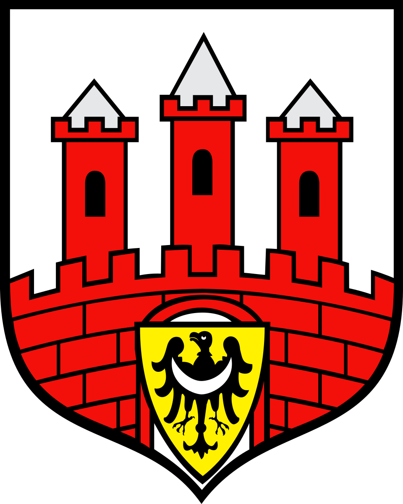

🇵🇱 Bolesławiec – Stadt der Keramik
Bolesławiec ist eine historische Stadt im Südwesten Polens, bekannt für ihre jahrhundertealte Tradition der Keramikherstellung. Die berühmte „Bunzlauer Keramik“ ist weltweit begehrt und zeichnet sich durch ihre unverwechselbaren blauen Muster aus. Neben der Keramik bietet die Stadt eine charmante Altstadt mit bunten Häusern, gemütlichen Cafés und historischen Denkmälern.
Die Stadt bietet auch zahlreiche kulturelle Aktivitäten: Theateraufführungen, traditionelle Feste, Musikveranstaltungen und Workshops, in denen Besucher selbst Keramik gestalten können. Parks, Flussufer und Radwege laden zu Outdoor-Aktivitäten ein. Wer Bolesławiec besucht, erlebt eine einzigartige Mischung aus Tradition, Kunst und lebendigem Stadtleben.
